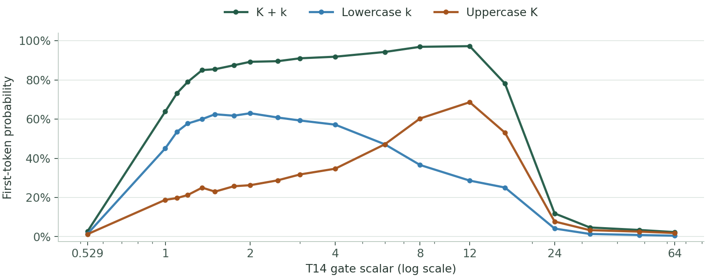

Restoring K after T2375 ablation
Removing L29–T2375 changes the alphabet answer from k to l.
Restoring only the scalar of downstream L33–T14 recovers k while T2375 stays off.
the eleventh letter of the english alphabet is- Native P(K)
- 71.07%
- After T2375 removal
- 2.65%
- After T14 scalar repair
- 63.82%
Which downstream contributions can recover K?
We restored each candidate’s native gate × UVx at the final is in a separate run with T2375 off.
T14 and T965 recovered the exact native 24-token continuation. T1440 gave 'k' in quotes, so its first token is the opening quote.
| Condition | First token / response | P(K) | P(L) |
|---|---|---|---|
| Native |
| 71.07% | 1.03% |
| T2375 off |
| 2.65% | 32.75% |
| L33–T14 |
| 71.49% | 1.74% |
| L34–T965 |
| 27.67% | 14.23% |
| L35–T760 |
| 3.18% | 29.14% |
| L34–T1440 |
| 7.39% | 22.77% |
| L35–T2117 |
| 2.58% | 32.96% |
Expand any first token to see the recorded continuation. Full-vector measurements and verification.
Restoring the scalar alone recovers K
T2375 removal reduced T14’s scalar at is from 0.998945 to 0.529325.
We added the difference times the ablated operator to the native layer-33 MLP output.
added vector = (0.998945 − 0.529325) × UVx_off
| Condition | First token / response | P(K) | P(L) |
|---|---|---|---|
| Native |
| 71.07% | 1.03% |
| T2375 off |
| 2.65% | 32.75% |
| T14 scalar only |
| 63.82% | 2.90% |
| T14 full contribution |
| 71.49% | 1.74% |
The scalar repair reproduced the full native continuation at 24 tokens. P(K) recovered to 63.82%, compared with 71.49% after full-vector repair. Scalar measurements and verification.
Letter probability rises through 12, then drops
Across the measured scalar values, combined P(K) rose from 63.82% at 0.999 to a highest measured 97.24% at 12.
The most likely spelling switched to uppercase by gate 8. At 24 the leading token was King, and at 48 and 64 it was _k.

All tested scalars and full responses
| T14 scalar | First token / response | P(K + k) | P(k) | P(K uppercase) | P(L) |
|---|---|---|---|---|---|
| Native model |
| 71.07% | 46.29% | 24.78% | 1.03% |
| 0.529 · T2375 off |
| 2.65% | 1.41% | 1.24% | 32.75% |
| 0.999 |
| 63.82% | 45.05% | 18.78% | 2.90% |
| 1.1 |
| 73.26% | 53.55% | 19.70% | 1.44% |
| 1.2 |
| 78.98% | 57.74% | 21.24% | 0.78% |
| 1.35 |
| 85.01% | 60.00% | 25.01% | 0.36% |
| 1.5 |
| 85.46% | 62.48% | 22.98% | 0.19% |
| 1.75 |
| 87.47% | 61.74% | 25.74% | 0.095% |
| 2 |
| 89.26% | 63.00% | 26.26% | 0.0494% |
| 2.5 |
| 89.55% | 60.82% | 28.73% | 0.0283% |
| 3 |
| 91.03% | 59.30% | 31.74% | 0.0197% |
| 4 |
| 91.85% | 57.17% | 34.68% | 0.0146% |
| 6 |
| 94.27% | 47.13% | 47.13% | 0.00829% |
| 8 |
| 96.90% | 36.58% | 60.31% | 0.00379% |
| 12 |
| 97.24% | 28.61% | 68.63% | 0.000975% |
| 16 |
| 78.15% | 25.07% | 53.08% | 0.000401% |
| 24 |
| 11.86% | 4.14% | 7.73% | 4.29e-06% |
| 32 |
| 4.69% | 1.38% | 3.31% | 4.62e-08% |
| 48 |
| 3.40% | 0.83% | 2.57% | 1.28e-10% |
| 64 |
| 2.32% | 0.47% | 1.85% | 3.27e-12% |

What the repair establishes
T2375 ablation alone lowered P(K) from 71.07% to 2.65%. Restoring T14’s scalar was sufficient to compensate experimentally on this prompt. T14’s gate weakened in the unassisted ablation. Whether lowering T14 alone with T2375 intact would reproduce the flip remains open.
P(K) sums the raw first-token probabilities of k and K. P(L) does the same for l and L.
Both edit sites were at the final input token is, position 8 (zero-based), in the pinned native Qwen3-4B run.
Edits use FP32 arithmetic followed by a BF16 cast. Later layers and generation proceed normally.
The prior native, T2375-off, and native-scalar baselines reproduced exactly. Gate 8 reproduced across both sweep stages.